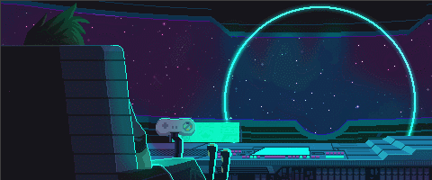

General Interests
Personally, technology has always been a keen interest of mine. From buying little robot building kits as a kid to my borderline obsession with gaming that I am still proud to not have grown out of today. I have always loved the creative side of technology and coding, it is all the creative ability of an artist but with the technical knowledge to bring your creation to life for you and others in the form of games, apps, websites. It is impossible to go out anywhere without encountering and using technology, we have wove it into almost every aspect of society and will continue to. This just encourages my passion for it even more.
As previously mentioned my main pass time/hobby/passion is gaming and all that encompasses that. I have a keen interest in the global E-Sports wave that has become a huge success in Korea and the USA and hopefully the UK will follow, with its first scholarship for professional gaming available from 2019 in London. With my interest in gaming this led to many things that led to my interest in coding. First of all, I love game development so i like to spend time watching videos on indie developers designing and creating app/platformers and also watching whole teams tackle AAA titles. One of my favourite studios situated in Wilmslow has currently been developing Star Citizen for over 5 years and I love to watch their update videos on youtube with the community. With my passion for gaming I decided I wanted a gaming pc over a console, so instead of going out and buying one, I decided to teach myself to build my own. With a month of solid planning and various youtube searching along with worries about compatibility, I finished my gaming desktop that I still have today. Furthermore, my love for coding came hand in hand with my passion for gaming and development. Watching these developers showed me how artistic development is, learning any coding language gives you the ability to cooperate with software and bring a vision to life for everyone to enjoy. Whether that is just a simple smile because of a nice graphic on a coffee app or a whole story being told in a video game, it’s the best new medium to reach an audience and coding encompasses everything that I find interesting/satisfying.
Why I chose to attend Code Nation
With my personal interests all aligning to coding and development I treated this as a hobby, especially whilst doing other subjects in college etc I ended up doing really well in Ancient History which is what I started my degree in which brought me to manchester. During this I had a job at a night club and before that I had worked at alton towers, both as a games host and a ride operator. Whilst these obviously don’t relate to coding these were just jobs to make ends meet, and sadly like most other people I always assumed that's how i would make money, from jobs i didn’t enjoy. After taking the leap to drop out of uni to pursue genuine happiness I stumbled across Code Nation, a company offering to train you in coding without university, this sounded perfect as it was always a downer in the back of my mind that I would never truly be a developer as i thought it was too late to go to university and still be a suitable applicant. As soon as I discovered Code Nation I went to an open day two days later and two weeks after that I started my introductory course to coding.